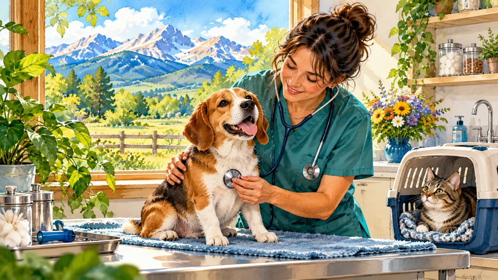
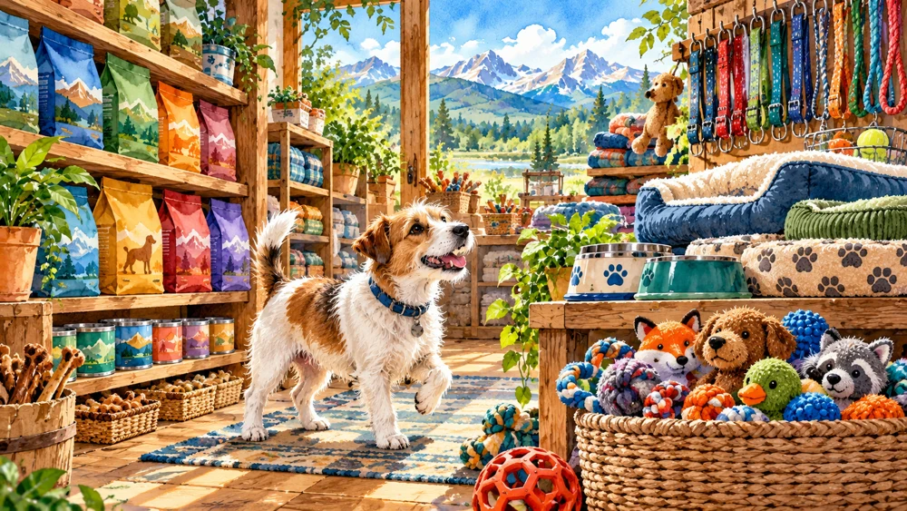
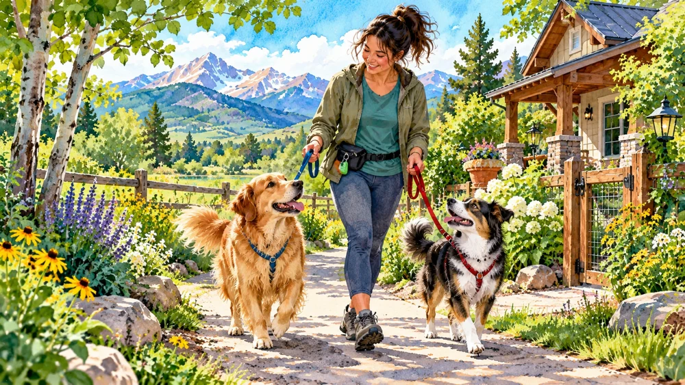
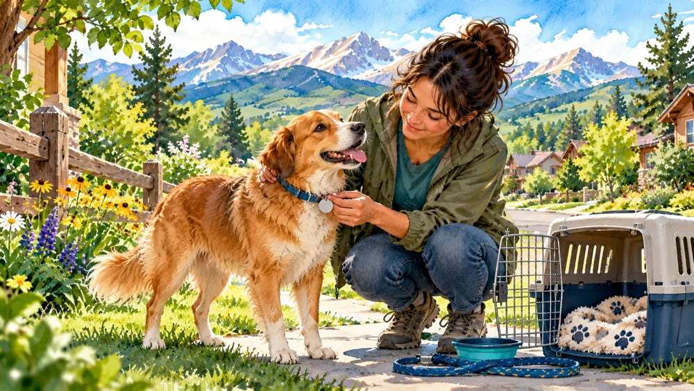
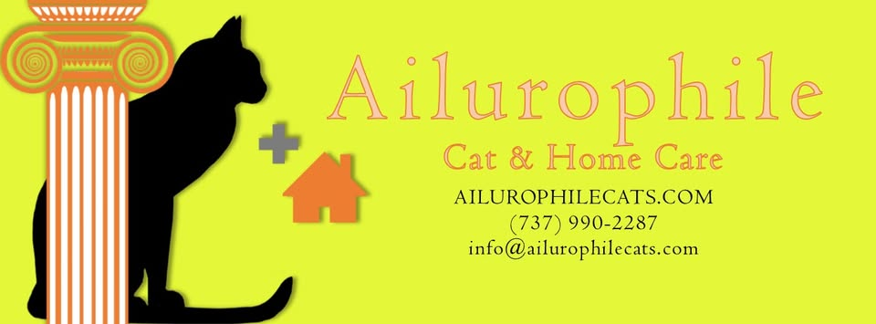

Longmont Humane Society
Longmont's primary nonprofit animal shelter provides adoption, lost-and-found services, pet rehoming resources, dog training, veterinary care, fostering, volunteering and humane education.
Whether you're looking to adopt, help an injured wild animal, visit a farm, volunteer with a rescue, find a local veterinarian, buy pet supplies or find someone trustworthy to care for your pets, start here.

Shelters, rescues, wildlife rehabilitation and volunteering.

Farms, rescued animals, horses and family experiences.

Independent and locally focused veterinary practices.

Local alternatives to large national pet-store chains.

Local sitters, dog walkers, kennels and home care.

Emergency, wildlife and lost-pet resources.
Adopt, foster, volunteer, donate or find professional help for an animal in need.
Longmont's primary nonprofit animal shelter provides adoption, lost-and-found services, pet rehoming resources, dog training, veterinary care, fostering, volunteering and humane education.
Colorado Horse Rescue has been helping at-risk horses since 1986. The organization provides rehabilitation, adoption, foster support and education while helping horses transition into safe homes.
A Longmont nonprofit sanctuary providing a safe forever home for rescued farm animals. Good Life Refuge cares for over 60 animals and relies on volunteers and donors to support their residents.
Greenwood rehabilitates orphaned, injured and sick wild birds, mammals and waterfowl from across the Front Range. Call before attempting to rescue or transport wildlife.
This Longmont-area nonprofit specializes in reptiles and amphibians, providing sheltering, adoption, education and care guidance for animals with highly specialized needs. CoRHS also rehabilitates Colorado-native reptiles and amphibians, helping wildlife in need of specialized care.
Greenwood Wildlife Rehabilitation Center does not rehabilitate reptiles or amphibians. For injured or orphaned reptiles and amphibians, contact Colorado Reptile Humane Society (CoRHS) or Rocky Mountain Wildlife Alliance.

Longmont Animal Control handles domestic animal concerns, certain wildlife calls, pet licensing, animal bites, lost-animal issues and animal-related ordinance enforcement.
Longmont has several farms and sanctuaries where families can meet animals, learn about agriculture and enjoy time outside.

Farmfest visitors can meet goats, sheep, cows, horses, llamas, chickens and other farm animals while exploring play areas, tractors, hay bales and the working farm.

A quirky six-acre family farm with bees, horses, goats, pigs, chickens, peacocks, U-Pick sunflowers, pumpkins, local honey and more. Visitors can feed animals, climb tractors and explore the property. Check the website and social media for pony rides, storytimes and other special events.

Explore Boulder County's agricultural history while seeing seasonal farm animals including chickens, pigs, horses and goats.
Meet rescued pigs, chickens, cows, alpacas, ducks, goats and other sanctuary residents while learning their stories during a guided tour.
Meet horses cared for by Colorado's longest-standing horse rescue and learn about rehabilitation, adoption and responsible equine care.
A selection of established, independent or locally focused veterinary practices serving Longmont pets.
A locally owned and female-led veterinary hospital providing preventive care, dentistry, surgery, urgent care, diagnostics and care for some exotic pets.
A full-service veterinary practice providing preventive care and medical services from puppy and kitten care through senior-pet wellness.

Family Pet Hospital focuses on dogs and cats and emphasizes a low-stress approach designed to reduce anxiety during veterinary visits.
Full-service veterinary care offering wellness, dentistry, diagnostics, pain management, acupuncture and urgent care during regular office hours.
A full-service small-animal hospital providing medical, surgical, dental, diagnostic and wellness care for dogs and cats.
The Humane Society's veterinary clinic provides community veterinary services for dogs and cats at the shelter on Nelson Road.
Before ordering from a national chain, consider supporting one of Longmont's smaller pet businesses.
A locally owned pet store specializing in natural dog and cat foods, raw and fresh diets, treats, supplements, toys, beds, collars and other pet supplies.
A pet boutique offering specialty foods, supplements, grooming, self-wash facilities and dog daycamp in Downtown Longmont.
Local pet-care options for vacations, workdays, daily walks and overnight care.
Longmont-based professional in-home pet sitting and dog walking for dogs, cats, puppies, special-needs pets, birds and fish.
A smaller Longmont boarding facility offering overnight dog boarding, calmer day lodging and grooming with an emphasis on individualized routines.
A locally owned pet-care company serving Longmont and surrounding Boulder County communities with in-home pet care, dog walking, pet sitting and training.

A Longmont-based service specializing specifically in in-home cat care, including feeding, litter care, play, companionship and care for cats with specialized routines.
A country-style Longmont pet-care facility offering dog boarding, daycare, cat boarding, grooming and training.
Longmont-area dog boarding and doggie daycare with climate-controlled kennels and outdoor exercise areas.
Who you should call depends on whether the animal is a pet, wildlife or an immediate safety concern.
Greenwood Wildlife Rehabilitation Center
303-823-8455
Call before picking up or transporting wildlife whenever possible.
Reptiles & Amphibians:
Colorado Reptile Humane Society (CoRHS)
303-776-2070
CoRHS rehabilitates Colorado-native reptiles and amphibians.
City of Longmont Animal Control
303-651-8500
Animal concerns, injured domestic animals, bites, at-large animals and certain wildlife situations.
Colorado Parks & Wildlife
St. Vrain Area Office: 303-485-0186
Appropriate for deer, elk and other larger wildlife situations.
Longmont Humane Society operates a Public Pet Pantry with free pet food and other supplies for community members who need assistance.
Dogs and cats living within Longmont city limits must be licensed. Pet licensing also helps reunite lost animals with their families.
Longmont Humane Society, Colorado Horse Rescue, Good Life Refuge, Greenwood Wildlife and Colorado Reptile Humane Society all offer ways for volunteers to help.
Know a Longmont animal rescue, independent veterinarian, pet sitter, farm, wildlife resource or locally owned pet business that belongs here? Send it to Loving Longmont.
Suggest an Animal Resource →